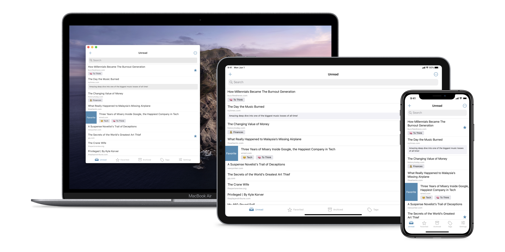

Abyss. The best way to save links for later.
I've built Abyss to be the best read later app on your iPhone, iPad and Mac. Built from the ground up with privacy in mind, Abyss doesn't require you to log in on any external service. Everything happens on your device, and thanks to iCloud, your data is synced between all your devices and it's safely stored. Categorize your links by tags, add notes to remember why you saved them, search instantly on your entire library or download an offline copy of a website. Download it for free on the App Store.
Key Features
Test 1
Remember when you looked at that green mountain bike online? And then saw annoying green mountain bike ads everywhere you browsed? Safari uses machine learning to identify advertisers and others who track your online behavior, and removes the cross‑site tracking data they leave behind. So your browsing stays your business. And Safari keeps embedded content such as Like buttons, Share buttons, and comment widgets from tracking you without your permission. We know you’ll like that.
Test 2
Remember when you looked at that green mountain bike online? And then saw annoying green mountain bike ads everywhere you browsed? Safari uses machine learning to identify advertisers and others who track your online behavior, and removes the cross‑site tracking data they leave behind. So your browsing stays your business. And Safari keeps embedded content such as Like buttons, Share buttons, and comment widgets from tracking you without your permission. We know you’ll like that.
Test 3
Remember when you looked at that green mountain bike online? And then saw annoying green mountain bike ads everywhere you browsed? Safari uses machine learning to identify advertisers and others who track your online behavior, and removes the cross‑site tracking data they leave behind. So your browsing stays your business. And Safari keeps embedded content such as Like buttons, Share buttons, and comment widgets from tracking you without your permission. We know you’ll like that.
Test 4
Remember when you looked at that green mountain bike online? And then saw annoying green mountain bike ads everywhere you browsed? Safari uses machine learning to identify advertisers and others who track your online behavior, and removes the cross‑site tracking data they leave behind. So your browsing stays your business. And Safari keeps embedded content such as Like buttons, Share buttons, and comment widgets from tracking you without your permission. We know you’ll like that.